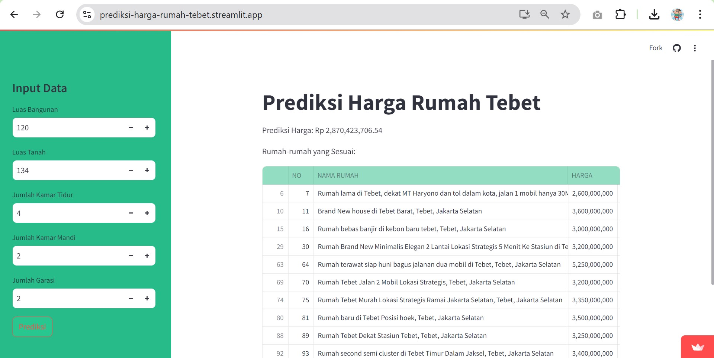
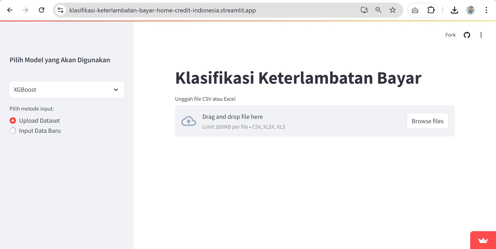
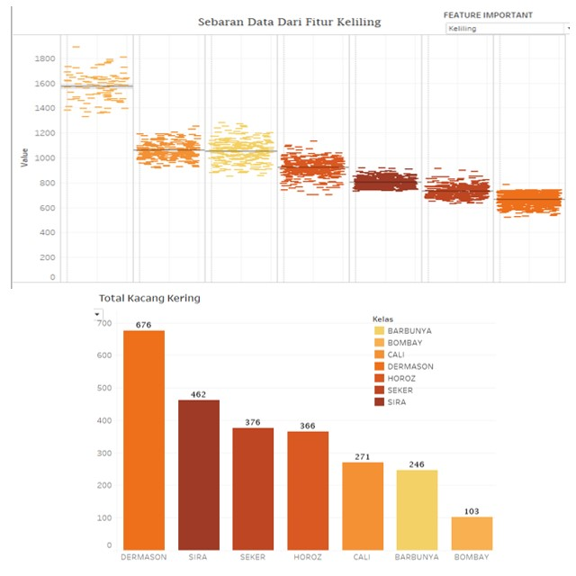
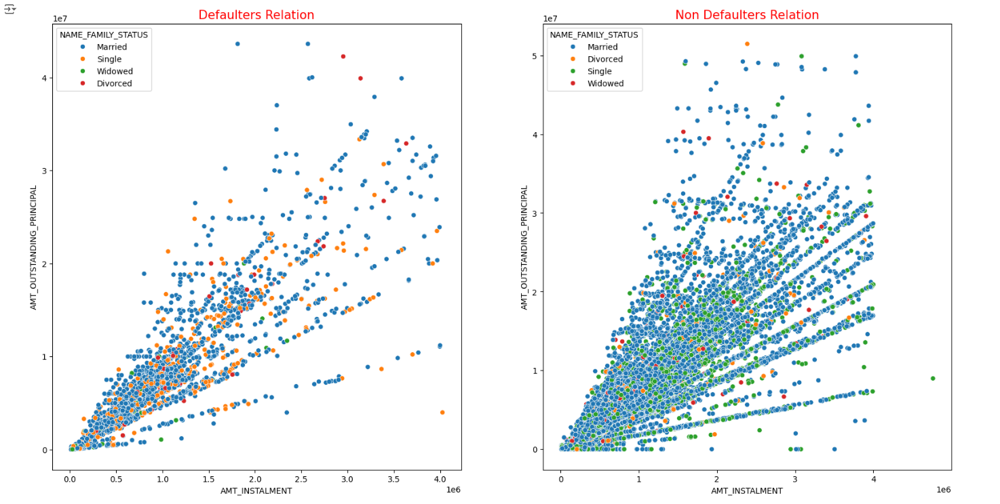

Projects
Sales Analysis Dashboard
This dashboard analyzes sales data and visualizes key performance metrics.

Tebet House Price Prediction
Developed a multiple linear regression model to predict house prices in the Tebet area. The model utilizes key features such as building area, land area, number of bedrooms, bathrooms, and garage capacity.
Customer Default Prediction for Home Credit Indonesia
This project aimed to compare the performance of XGBoost and LightGBM in predicting customer default for Home Credit Indonesia.
Identifying Optimal Dry Bean Varieties Using Machine Learning
By leveraging machine learning algorithms and interactive visualizations in Tableau, this project seeks to uncover the most desirable dry bean varieties based on a comprehensive analysis of various quality parameters.
Unraveling the Reasons Behind Late Payments: An Exploratory Data Analysis
This study utilizes Python and visualization libraries to explore payment delay datasets and uncover hidden patterns and trends. The findings were presented in clear and visually engaging formats.
